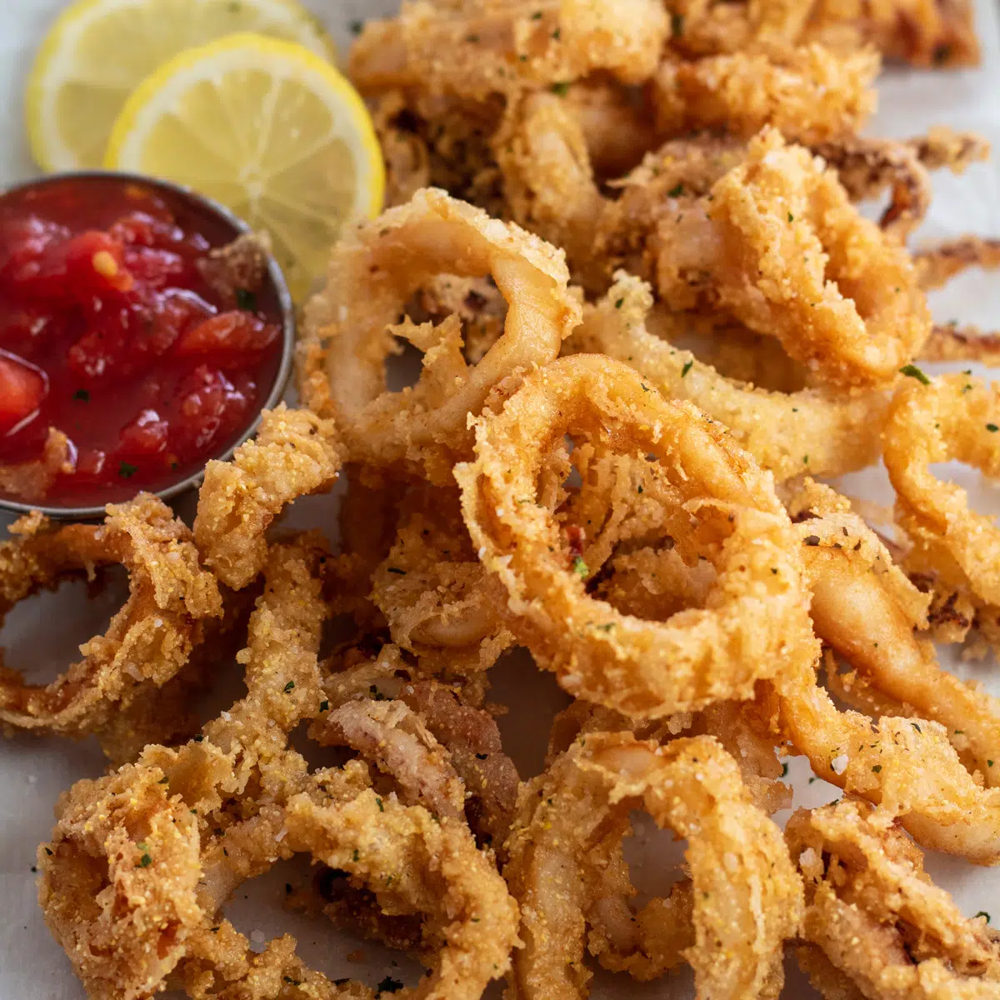

<!DOCTYPE html>
<html>

<head>

</head>

<body>
    <h1>
        <span style='Gothic  Calamali
    </h1>
    
    <h2>Ingredients <span style="font-weight:normal">
            <li>1 pound Squid</li>
            <li>1 cup Buttermilk</li>
            <li>Cooking Oil</li>
            <li>1 ½ cups All-Purpose Flour</li>
            <li>⅓ cup Cornmeal</li>
            <li>2 teaspoons Old Bay</li>
            <li>2 ½ teaspoons Kosher Salt</li>
            <li>Lemon Wedges</li>
            <li>Marinara</li>
            </ul>
        </span>
    </h2>
    <h2>
        Preperation
        <ol><span style="font-weight:normal">
                <li>Prep the squid. Start by patting 1 pound of cleaned squid dry using paper towels. You especially
                    want to
                    do this if it’s been thawed. Then, place the dried squid into a bowl and pour 1 cup of buttermilk
                    over
                    it and toss to coat evenly. Cover with plastic cling film and refrigerate for at least 2 hours and
                    up to
                    24 hours maximum.
                </li>
                <li>Heat the frying oil. Next, heat enough cooking oil to fully submerge the batches of calamari in a
                    deep
                    skillet, Dutch oven, or deep fryer. Bring the oil to 375°F (190°C).</li>
                <li>Bread the calamari. Working in batches as needed, use a fork to remove the squid pieces from the
                    bowl of
                    buttermilk. Then, allowing the pieces to drip dry as much as possible, transfer into your shallow
                    dish
                    of breading. You want to lightly dredge each piece and shake off excess.</li>
            </span>

        </ol>
    </h2>
    <h2>Frying The Calamari
        <ol><span style="font-weight:normal">
                <li>Fry until golden. Working in batches, place the breaded squid pieces into the heated oil and fry
                    until a
                    light golden-brown color and crispy. About 45 seconds is all it takes! Then, use a slotted spoon or
                    metal tongs to remove the fried calamari to a wire cooling rack (with paper towels beneath to catch
                    the
                    oil).</li>
                <li>Finish and serve. When all the calamari are fried, place the calamari into a large bowl and sprinkle
                    with the remaining ½ teaspoon of Kosher salt. Toss to coat, then serve immediately!</li>
            </span>
        </ol>
        </h1>

</body>

</html>